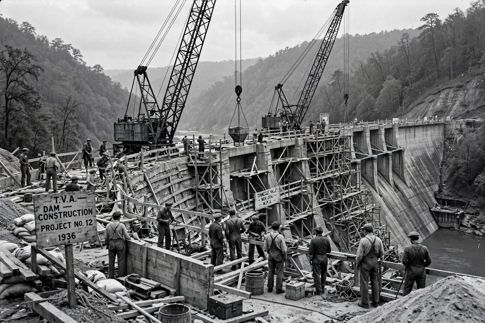

New Deal
From Wikipedia, the free encyclopedia

The New Deal was a series of programmes, public work projects, financial reforms and regulations enacted by President Franklin D. Roosevelt in the United States between 1933 and 1938 in response to the Great Depression. Organised around the 'Three Rs' — relief, recovery and reform — it transformed the role of the federal government and realigned American politics for a generation.
The Hundred Days and the First New Deal
Taking office in March 1933 amid a banking collapse, Roosevelt declared a bank holiday and pushed the Emergency Banking Act through Congress in the opening 'Hundred Days'. The First New Deal (1933–34) created the Civilian Conservation Corps, the Agricultural Adjustment Administration, the Tennessee Valley Authority and the National Recovery Administration, and took the dollar off the gold standard.
The Second New Deal
From 1935 Roosevelt turned to structural reform and relief for labour: the Works Progress Administration employed millions building roads, schools and airports; the Social Security Act created old-age pensions and unemployment insurance; the Wagner Act guaranteed collective bargaining; and the Fair Labor Standards Act (1938) set the first federal minimum wage and maximum hours.
Opposition and legacy
The New Deal faced attack from the right (business groups, the Supreme Court, which struck down the NRA and AAA) and the left (Huey Long, Francis Townsend). Roosevelt's 1937 court-packing plan failed, but the Court's 'switch in time' upheld the new order. The New Deal coalition — labour, the South, cities, African Americans increasingly — dominated US politics until the 1960s; Social Security, the SEC and federal deposit insurance remain its living monuments. Full employment arrived only with Second World War mobilisation.